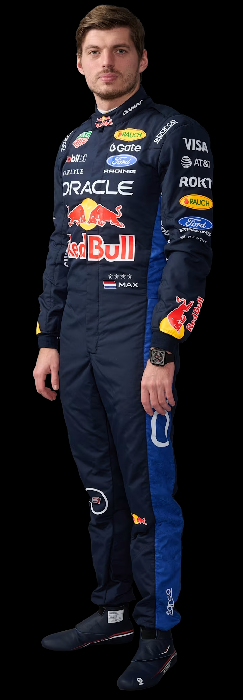

Макс Ферстаппен
Red Bull Racing · #3
Нідерланди · Перемог: 71
Усі учасники чемпіонату · Сезон 2026
Очки нараховуються першій десятці пілотів за такою схемою:
FIA (Fédération Internationale de l'Automobile) — це некомерційна організація, заснована у 1904 році. Вона є головним керівним органом світового автоспорту.
Штаб-квартира знаходиться у Парижі. Організація відповідає за розробку технічного та спортивного регламентів:
— Безпека: впровадження системи HALO та вогнетривких комбінезонів.
— Екологія: перехід на викопне паливо → 100% стале паливо до 2026 року.
Температура гальмівних дисків під час гонки: max 1000°C. Тиск у шинах контролюється спеціальними датчиками [TPMS].